Toolbar Config object¶
The canvas toolbar config object is optional. If it is not provided Common Canvas will display a reasonable default toolbar.
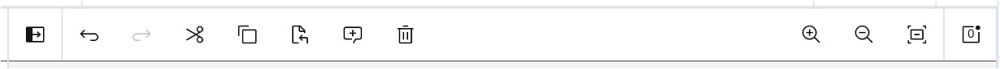
If the toolbar config is provided, it configures which action buttons and dividers are shown in the toolbar. A toolbar will be displayed for Common Canvas if the canvas configuration field enableToolbarLayout is set to “Top” (which is the default).
The toolbar config object specifies actions for the left and right side of the toolbar. The application can also optionally tell the toolbar not to handle the enable/disable state for the standard toolbar buttons using overrideAutoEnableDisable.
When the user clicks one of the action buttons the action will be performed either by Common Canvas or by the application, if it is an applicaiton specific action. In both cases, Common Canvas will call the beforeEditActionHandler and editActionHandler callbacks.
The toolbar supports a number of keyboard shortcuts for accessibility
The leftBar and rightBar fields contain an array of action objects: one element for each toolbar item. Here is an example, toolbar configuration object:
import { Bookmark } from "@carbon/react/icons";
...
...
const toolbarConfig = {
leftBar: [
{ action: "undo", label: "Undo" },
{ action: "redo", label: "Redo" },
{ divider: true },
{ action: "cut", label: "Cut" },
{ action: "copy", label: "Copy" },
{ action: "paste", label: "Paste" },
{ divider: true },
{ action: "createAutoComment", label: "Add Comment", enable: true },
{ action: "deleteSelectedObjects", label: "Delete" },
{ action: "arrangeHorizontally", label: "Arrange Horizontally", enable: true }
{ divider: true },
{ action: "myBookmrk", label: "Add bookmark", enable: true, iconEnabled: (<Bookmark size={32}/>) }
],
rightBar: [
{ action: "stop", label: "Stop Execution", enable: false },
{ divider: true },
{ action: "run", label: "Run Pipeline", enable: false }
],
overrideAutoEnableDisable: false
};
...
...
return <CommonCanvas toolbarConfig={toolbarConfig} canvasController={canvasController}/>
-
leftBar - an array of action items to specify what is displayed on the left side of the toolbar.
-
rightBar - an array of action items to specify what is displayed on the right side of the toolbar. If this is omitted, Common Canvas will automatically populate the right side of the toolbar with zoom-in, zoom-out, and zoom-to-fit actions. To suppress these right side actions, specify the
rightBarfield as an empty array or an array containing the actions required on the right. -
overrideAutoEnableDisable - a boolean. The default is false. By default Common Canvas has an auto-enablement feature that controls the enablement of common tools in the toolbar based on user actions (e.g enable the
Deleteicon when items are selected). IfoverrideAutoEnableDisableset to true it will switch off the auto-enablement feature. This is useful if the host application wants to disable all the nodes under certain circumstances. If set to true, theenableproperty in the action items for each tool is used to decide whether to display the icon as enabled or disabled. If set to false or omitted, Common Canvas will handle the auto-enablement of common actions. (See theactionsection below for more details.)
The toolbar will display the objects in the same order they are defined in the leftBar and rightBar arrays.
Toolbar action object definition¶
Here is an example of an action object which must contain a unique action field as a minimum.
{
action: "run",
label: "Run",
enable: true,
iconEnabled: "/image/myOwnEnabledIcon.svg",
iconDisabled: "/image/myOwnDisabledIcon.svg",
incLabelWithIcon: "before",
kind: "primary",
tooltip: "Run the flow",
isSelected: false
}
-
action - a unique identifier string which is the name of the action to be performed. This action name will set in the
editTypefield of thedataparameter passed into the beforeEditActionHandler and editActionHandler callback methods. The application can use these callbacks to detect what action the user clicked in the toolbar.The toolbar supports two types of action:
-
Internal actions - These are requested by the application by specifying one of the reserved internal actions names. These actions are performed internally by Common Canvas. A default icon will be provided by Common Canvas for the most popular actions. For example, if the
deleteSelectedObjectsaction is specified a trash can icon will be displayed in the toolbar and any selected objects will be deleted from the flow editor when the action is clicked. The application can override the default icon by specifying theiconEnabledfield.Disablement of these built in actions is also handled by Common Canvas: “undo”, “redo”, “cut”, “copy”, “paste”, “deleteSelectedObjects”, “createAutoComment”, “arrangeHorizontally” “arrangeVertically”, “zoomIn”, “zoomOut”, “zoomToFit”.
For example, when no canvas objects are selected the
deleteSelectedObjectsaction (trash can icon) will be automatically disabled.The application can switch off this automatic enable/disable function by setting
overrideAutoEnableDisablefield in the toolbar config totrue. WhenoverrideAutoEnableDisableset to true, theenablefield in each action object will set the enablement appearance of the item. -
External actions - These are specified by the application and must be handled by the application in the beforeEditActionHandler and editActionHandler callbacks. An icon must be specified for these actions. The application can use icons imported from the Carbon Icon library. For example, in the sample code above
myBookmrkhas been specified as a external action with the CarbonBookmarkicon specified. Common Canvas will ignore this action when the button is clicked and pass it through in thedata.editTypefield to the editActionHandler callback.
-
-
label - a short string or a JSX object that describes the action. This is used as the tooltip text or is (optionally) displayed next to the icon if
incLabelWithIconis specified. -
enable - A boolean. The action button is clickable when set to true. If false, the button will be disabled. If not set, it will default to disabled (false). If
overrideAutoEnableDisableis set to false, or omitted, this field is ignored for the standard action items (like cut, copy, paste) because Common Canvas handles their enable/disable appearance. IfoverrideAutoEnableDisableis set to true, this field will be used for standard action items.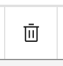 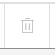
-
iconEnabled - specifies the icon to display when
enableis true. Common Canvas will provide icons for some of the reserved internal actions so the application doesn’t need to specifyiconEnabledoriconDisabledfor them:It can be either:
- a string containing the path to a custom SVG file to display or
- a JSX expression, for example
(<Edit32 />)where Edit32 is an icon imported from carbon icons. It is recommended to only pass very simple JSX expressions.
-
iconDisabled - specifies the icon to display when
enableis false. IficonDisabledis not specifiediconEnabledwill be used instead. It can be omitted for any of the standard actions (seeiconEnabledabove).It can be either:
- a string containing the path to a custom SVG file to display or
- a JSX expression, for example
(<Edit32 />)where Edit32 is an icon imported from carbon icons. It is recommended to only pass very simple JSX expressions.
-
incLabelWithIcon - can be set to “no”, “before” or “after”. The default is “no”. This field specifies whether the label should be displayed in the toolbar with the icon and if so, where it is displayed with respect to the icon.
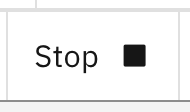 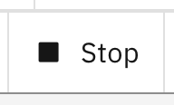
-
kind - can be set to “default”, “primary”, “danger”, “secondary”, “tertiary” or “ghost”. The default it “default”. These give the action the same styling as the equivalent kind’s of buttons in the carbon library.
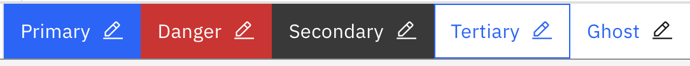
-
tooltip - A string or JSX object. The tooltip that will be displayed for the action. If this is not provided the label will be displayed as the tooltip instead.
-
isSelected - A boolean. When set to true the toolbar button displays a selection highlight. This is displayed as either a blue bar along the bottom border of buttons in the toolbar
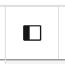 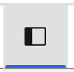
or a checkmark for items that appear in sub-menus.
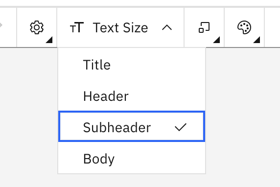
When applied This is useful for implementing a button that switches on and off a mode, as opposed to a regular button which does not have any state.
This property can also be used to indicate a current state between a number of mutually exclusive settings. In this case, one button would be added to the toolbar for each setting and then the
isSelectedproperty would be set to true for the setting that is currently active. Then, when the user clicks a different option in the set, the application code would setisSelectedto true for that button and set it to false for the previously selected button. (This would give behavior like a radio button set.) -
className - This a string that will be appended to the
classfield for the top-level<div>that surrounds the action button. This can be used to set application-specific CSS for the button. -
textContent - This is an additional string that will be displayed on top of the action button. It can be used to specify adittional information to enahance the icon. For example, a count of messages could be displayed over a icon that, when clicked, shows a messages panel.
Automatic toolbar items¶
Two toolbar items are automatically added to the toolbar:
- A palette action which is used for opening and closing the palette. This is added to the left side of the toolbar if the
enablePaletteLayoutfield is set to either “Flyout” (the default) or “Modal” in the canvas configuration. - A notification panel action which is used to open and close the notifications panel. This will be added to the right side of the toolbar if a notification configuration object is specified to the
<CommonCanvas>react object.
The position and a subset of fields for these items can be customized by providing an appropriate object in either the leftBar or rightBar arrays. The action field for the items should be either “togglePalette” or “toggleNotificationPanel”. Any of the following fields can be optionally provided to override the default values: label, iconEnabled, incLabelWithIcon and tooltip.
For example, if the application provides the following in, say, the leftBar array:
import { AddAlt, SubtractAlt, Notification } from "@carbon/react/icons";
...
const toolbarConfig = {
leftBar: [
...
{ action: "togglePalette",
label: this.canvasController.isPaletteOpen() ? "Close Palette" : "Open Palette",
iconEnabled: this.canvasController.isPaletteOpen() ? (<SubtractAlt />) : (<AddAlt />),
incLabelWithIcon: "after" },
{ divider: true },
{ action: "toggleNotificationPanel", iconEnabled: (<Notification />) },
...
]
};
Will look like this:
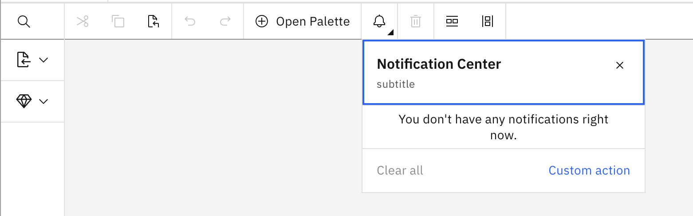
Sub-area properties¶
The toolbar button can show a ‘sub-area’ below the button when the button is clicked. This can be either a sub-menu which is a list of text options or a sub-panel which is a small window that can show whatever the application wants such as settings or messages.
-
subMenu - Specify either this or the
subPanelfield. This is an array of action objects (the same as those specified for the toolbar) which will displayed as a menu of options that appears under the icon on the toolbar.This code:
will display this:import { TextScale } from "@carbon/react/icons"; ... const subMenuTextSize = [ { action: "title", label: "Title", enable: true }, { action: "header", label: "Header", enable: true }, { action: "subheader", label: "Subheader", enable: true }, { action: "body", label: "Body", enable: true } ]; ... const toolbarConfig = { leftBar: [ ... { action: "text-size-submenu", incLabelWithIcon: "after", iconEnabled: (<TextScale size={32} />), label: "Text Size", enable: true, subMenu: subMenuTextSize, closeSubAreaOnClick: true } ... ] }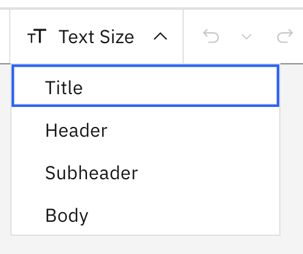
when the user clicks the options in the menu the associated action will be executed by calling the beforeEditActionHandler and editActionHandler callbacks.
-
subPanel - Specify either this or the
subMenufield. This is a React object that will render the contents of a panel that appears under the action icon.This code:
where this is the AppSettingsPanel classimport { Settings } from "@carbon/react/icons"; ... const toolbarConfig = { leftBar: [ ... { action: "settingspanel", iconEnabled: (<Settings />), label: "Settings", enable: true, subPanel: AppSettingsPanel, subPanelData: { saveData: (settings) => window.alert("Settings: " + settings) } } ... ] }will display this:
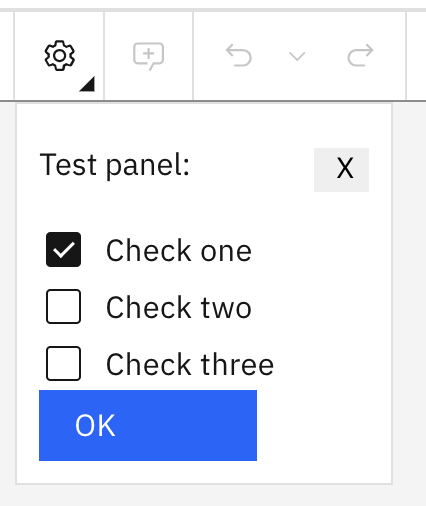
-
subPanelData - This is a JavaScript object that will be passed as one of the props into the React object specified in the
subPanelfield. The application can use this to pass into thesubPanelclass any data or callback functions needed for the panel to do its job. -
purpose - can be set to “single” or “dual”. The default is “single”. If set to “dual” the button will have two parts. The icon will be displayed to the left and to the right will be an up/down chevron icon. If the user clicks the icon on the left the action specified in the
actionfield will be executed. If the user clicks the chevron a panel will be displayed below the chevron with the contents that are specified in the object specified in thesubPanelfield.This code:
const toolbarConfig = { leftBar: [ ... { action: "undo", label: "Undo", enable: true, purpose: "dual", subPanel: MultiCommandPanel, subPanelData: {} } ... ] }where this is the MultiCommandPanel class
will display this:
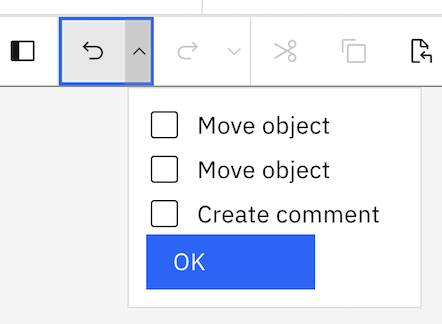
-
closeSubAreaOnClick - This is a boolean. The default is
false. If set totruethe sub-area will be close when sany element in it is clicked. This behavior might be useful if the sub-area displays a menu of options where only a single click on one of them is required.
Toolbar divider object definition¶
Dividers can be added to separate groups of actions from other actions. This is displayed as a thin gray line. The divider object has one attribute:
{
divider: true
}
- divider - To show a divider in the toolbar, add an object with
dividerattribute set to true.
Advanced: JSX actions¶
Regular toolbar buttons, explained above, are displayed as set of Carbon Buttons. If the application needs to display something not wrappered in a button, you can provide your own JSX to display in the toolbar. Be aware however that, because of the way the toolbar is designed, there are restrictions on what the toolbar can do to display your JSX. For example, it cannot display anything with a height greater than the toolbar height.
If you provide your own JSX object it is displayed in a simple div in the toolbar. Some attributes are applied to the div to allow the action to work correctly within the toolbar - these cannot be changed. You are responsible for styling your JSX object to get it to appear the way you want.
Also be aware that, if the width of the toolbar reduces (maybe by the user sizing the page) your action may get moved into the overflow menu. It is also your responsibility to style the button so it appears as you want in the overflow menu as well as in the toolbar.
The JSX can be provided in the jsx field. Here is an example. The only other fields that are recognized with the jsx field are action and tooltip, all other fields will be ignored.
{
action: "custom-loading",
jsx: (<div style={{ padding: "0 11px" }}><InlineLoading
status="active" description="Loading..." /></div>),
tooltip: "Loading the thing you wanted."
}
-
action - a unique identifier and the name of the action to be performed.
-
jsx - A JSX object or a funciton returning a JSX object. This will be displayed as the action in the toolbar.
To make the JSX object accessible inside the toolbar this field should be provided as a function. The function will pass a
tabIndexfield which should be set into the tabIndex property of the display object being created (see expample below). Additionally, the display object should have the `className set to “toolbar-jsx-obj” (see example below). -
tooltip - A string or JSX object. This will be displayed as the tooltip for the action in the toolbar. If
tooltipis omitted no tooltip will be added to your action. Iftooltipis specified thejsxwill be inside a tooltipdivwhich is in the toolbardivmentioned above.
For example, the following code that includes some Carbon React components:
toolbarConfig = {
leftBar: [
{
action: "custom-loading",
tooltip: "A custom loading!",
jsx: (tabIndex) => (
<div style={{ padding: "4px 11px" }}>
<InlineLoading status="active" description="Loading..."
className={"toolbar-jsx-obj"}
tabIndex={tabIndex}
/>
</div>
)
},
{ divider: true },
{
action: "custom-dropdown",
tooltip: () => (this.suppressTooltip ? null : "A drop down using the overflow menu!"),
jsx: (tabIndex) => (
<div className="toolbar-custom-button">
<OverflowMenu
id={"ovf1"}
renderIcon={TextScale32}
iconDescription={""}
onOpen={() => (
this.suppressTooltip = true)
}
onClose={() => {
this.suppressTooltip = false;
window.alert("Option selected");
}}
className={"toolbar-jsx-obj"}
tabIndex={tabIndex}
>
<OverflowMenuItem itemText="Big" />
<OverflowMenuItem itemText="Medium" />
<OverflowMenuItem itemText="Little" />
</OverflowMenu>
</div>
)
}
]
};
will display this:
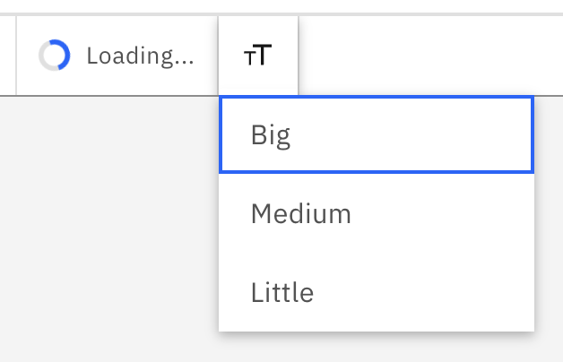
Deprecated toolbar config
The old toolbar configuration is still supported for now (but is deprecated). This allows the config to be provided as an array that defines just the left side of the toolbar. The right side will always show the zoom actions (zoomIn, zoomOut, zoomToFit) and a notifications panel icon (if a notification configuration object is provided in the <CommonCanvas> React object). These right side actions will always show on the right-hand side of the toolbar and are handled internally by the canvas. The entries in the array follow the same definition as described above. Note: there is no need to provide a palette action in the array because a palette icon and following divider will automatically be added to the toolbar when a palette is specified for the canvas.
An example of the toolbar config array should look like this:
const toolbarConfig = [
{ action: "stop", label: "Stop Execution", enable: false },
{ action: "run", label: "Run Pipeline", enable: false },
{ action: "undo", label: "Undo", enable: true },
{ action: "redo", label: "Redo", enable: true },
{ action: "cut", label: "Cut", enable: false },
{ action: "copy", label: "Copy", enable: false },
{ action: "paste", label: "Paste", enable: false },
{ action: "createAutoComment", label: "Add Comment", enable: true },
{ action: "deleteSelectedObjects", label: "Delete", enable: true },
{ action: "arrangeHorizontally", label: "Arrange Horizontally", enable: true }
];